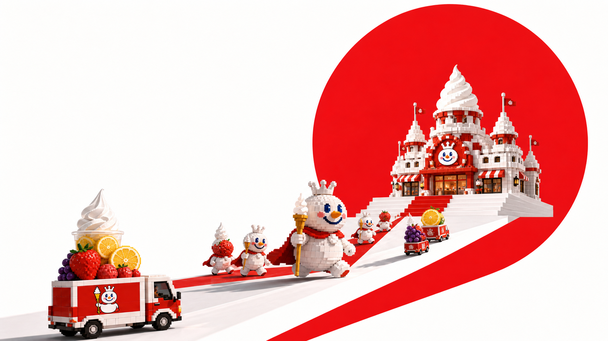
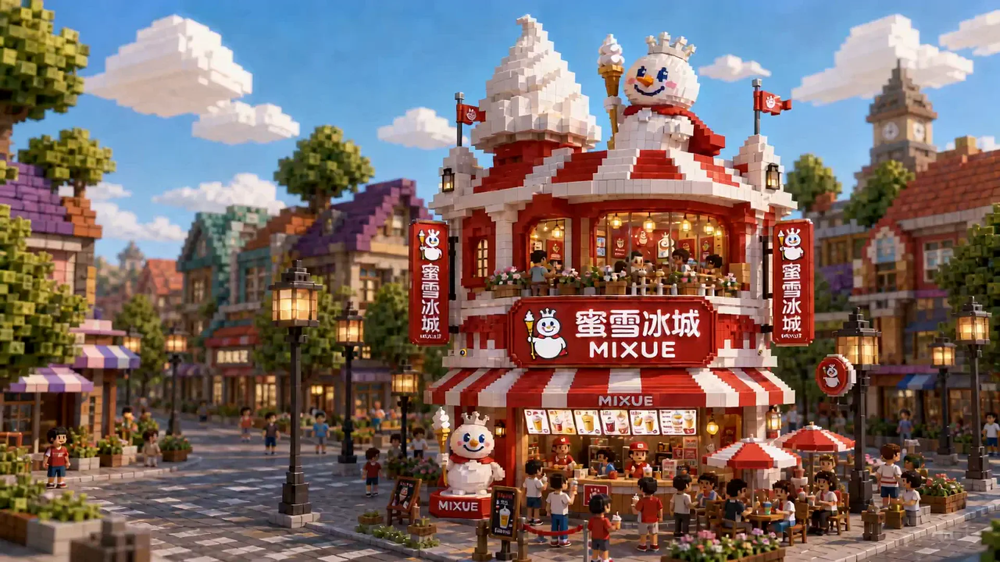
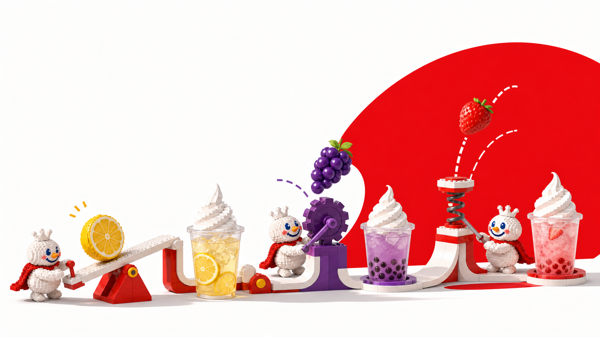
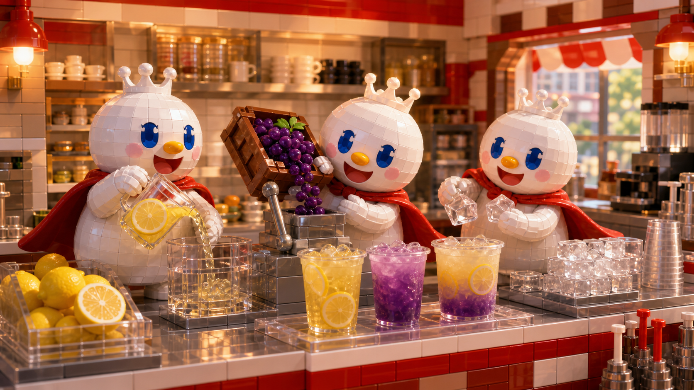

故事会自己往前走三张纸条
不是先选饮料。
先看今天缺什么。
雪王会带着你选中的那张出发。没有操作时，第一张订单会继续故事；你随时可以换。
01 已放进小车

08:01 · 小车出发
纸条一落，
雪王就动身。
不是去送蛋糕。先去把这一杯真正需要的原料找回来。

原料机关台
先让柠檬醒来。
压下红色把手，柠檬越过跷跷板，清爽就有了起点。
08:07 · 原料到手
柠檬把甜拉亮。
车轮追着黄色跑。柠檬落进车斗的那一刻，整条路都亮了。


蜜雪冰城
08:16 · 小店亮灯
原料回来了。
今天需要的那一口，也有了答案。

冰鲜柠檬水把复杂的一天，先还原成清亮的一口。